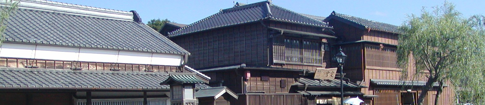

「社会科作文」－その１ －その３ －その４ －その５
作文ワールドⅠ（原点） 作文ワールドⅡ（1人1人の作文）
作文ワールドⅣ（理科作文） Ⅴ（スポーツ作文）
Ⅵ（七五の四行詩） Ⅶ（図工作文） Ⅸ（家庭科作文）
Ⅷ（エトセトラ） Ⅹ（作文のこころ）
小学生の作文教室 作品展示場（扉） トップページ
社会科作文と名づけた分野もにぎやかになってきたので、「その２」を設けることにする。
もとのページ（その１）の作品は主に夏休みの時のものであるため、あれはあれで一まとめにして、
ここ（その２）では、季節や場所にとらわれず、いろいろユニークな作品を紹介することにしよう。
も く じ
「東日本大震災」の作文・第１部 第２部・第３部
作文打出の小づち
総もくじ
１．『かまくら』（小６ 渡部秋平）
実は、当初、秋平くんは『雪』という題で、次のような作文を書いた。
| 当初の作文 |
添削例 |
| ぼくの住む横手市では雪がたくさん降ります。横手市では毎年２ｍの雪が降ります。２ｍといったら大人がすっぽりうまってしまうくらいです。雪が降って大変なことは雪かきと雪下ろしです。どちらもとても大変です。あと横手市ではかまくら祭りとぼんでんがあります。かまくら祭りではかまくらの中に入れてもらってあまざけやもちを食べさせてもらいます。あとぼんでんでは、ぼんでんをかついでいるところを見ます。どちらのお祭りでも屋台が」出るので、とても楽しいです。ぼくは雪が降って大変なことや楽しいことがあるのですごいなあと思いました。 |
← 毎年約２ｍ降ります。
※「雪がふって」で改行して、どんなふうに大変なのか、自分の体験をもとに書いてみよう。
※「あと横手市では」で改行する。横手では一冬にいくつぐらいのかまくらができるのだろう。
※「ぼんでん」というのは、どういうものなのだろう。
※「ぼくは雪が」で改行して、「雪が降ると大変だけど、楽しいこともあるので、雪ってすごいなあと思います。」とでもする。 |
一応添削しておいたのだが、この短い話の中におもしろうそうなことがいっぱい詰まっている。
そこで、次のようなコメントを付けておいた。
雪のことになると、さすがに話題が多くなるね。「雪かきと雪おろし」「かまくら」「ぼんでん」と、３つもある。この３つについて、雪のことをあまり知らない人のために、それぞれ別に書いてみよう。
「雪かきと雪下ろし」
12月になると、横手では雪がたくさん降ること、雪かきや雪下ろしをしなければならないこと、それが大変な作業であることを、自分の体験を交えて具体的に書いてみよう。
「かまくら」
自分の体験をもとに、かまくらの大きさや中の様子、また、どのようにして作るのか、横手市内にはいくつぐらいあるのか、いつの時代から始まった行事なのか、などについて書いてみよう。
「ぼんでん」
これはどういうものなのか。まったく知らない人が多いと思うので、いつごろ、どのように行われるのかを、自分が見たこと、あるいは、したことをもとに、くわしく書いてみよう。
「かまくら」や「ぼんでん」については、横手を代表して日本中の人に伝えるつもりで書いてね。
|
すると、まず「かまくら」が届いた。秋平くんはいろいろ調べたようだ。
| はじめの作文 |
添削例 |
かまくらは横手の冬の祭りです。
雪国秋田を代表する横手市の「かまくら」は400年以上の歴史をもつ詩情豊かな民俗行事です。かまくらの由来は、その昔雪室を造り、松飾り、しめ縄を焼く行事と鳥追いの行事、それに水不足になやまされたので「おしずの神さん」（水神様）を祭った行事とが一体になり小正月に行う伝統行事です。雪の山をくり抜き雪室をつくり奥に水神様を祭り、お神酒、甘酒、おもちなどを供えます。かまくらの御燈明が点ると、宵闇にほのぼのと灯りが漏れます。かまくらの中では、周囲の白い雪かべに灯が映えて明るくなります。
かまくらの作り方は地面にかまくらの大きさの円を描いて、雪をしっかりふみ固めながら３ｍくらいまで積み重ねます。次に、入り口部分に印をつけ、そこからほりはじめます。そして人がはいれるくらいまでほればかまくらができます。
ぼく達の小学校では雪祭りで全校でミニかまくらを作ります。ぼく達は約2000個のミニかまくらを作ってその日の夜にろうそくに火をつけます。その景色はとてもきれいです。
ぼくはかまくらのことについて調べて、かまくらは神さまを祭っている祭りなんだなあと思いました。 |
※ いつごろ行われるのだろう。
← それに、水不足になやまされた時に「おしずの神さん」…
← 一体になって小正月に行われるようになったのが始まりということです。（※この文の始めの「かまくらの由来は、」に合わせて文をしめくくる：主語・述語）。
← そして、人が○人くらい入れる部屋を作り、奥に水神様を祭る棚を作ります。
※ こんなかまくらが市内でいくつぐらいできるのだろう。数を入れて、町の様子も書こう。
◎ ミニかまくら作りの話はとてもいいね。 |
期待に応えて、秋平くんは祭りのあちこちの様子を詳しく書いてくれた。
| 書き直した作文 |
|
かまくらは横手の冬の祭りです。
雪国秋田を代表する横手市の「かまくら」は400年以上の歴史をもつ詩情豊かな民俗行事です。かまくらの由来は、その昔雪室を造り、松飾り、しめ縄を焼く行事と鳥追いの行事、それに、水不足になやまされた時に「おしずの神さん」（水神様）を祭った行事とが一体になって小正月に行われるようになったのが始まりということです。雪の山をくり抜いて雪室をつくり、奥に水神様を祭り、お神酒、甘酒、おもちなどを供えます。かまくらの御燈明が点ると、宵闇にほのぼのと灯りが漏れてきます。かまくらの中では、周囲の白い雪かべに灯が映えて明るくなります。
横手のかまくらは、２月15、16日に行われますが、作るのは１月末から始まります。
かまくらの作り方は、まず地面にかまくらの大きさの円を描いて、雪をしっかりふみ固めながら３ｍくらいまで積み重ねます。次に、入り口部分に印をつけ、そこから掘り始めます。そして、人が５、６人入るくらいまで掘り、奥に水神様を祭るたなを作って完成です。
祭りになると、市内には100個以上のかまくらができます。その中に町内の人や子供が入って、「入ってたんせ」（お入りください）、「甘えこ飲んでたんせ」（甘酒飲んで下さい）と言いながら、人々や観光客をもてなします。
ぼく達の小学校では、2月14日にミニかまくら集会を行います。バケツに雪をつめてひっくり返し、小さいシャベルであなを掘ります。全校で約2000個も作ります。夜、ミニかまくらにろうそくをともします。地域の人たちが屋台でおもちや甘酒を作ってくれます。2000個の灯りのついた景色はとても幻想的です。
かまくらは奥が深いなあと思いました。だから、これからもかまくらを引きついでいかないといけないなあと思いました。 |
※ いつ行われるのか、知らない人のためには、これが大事だね。
◎ これで祭り全体の様子が分かる。にぎやかでいいねえ。
◎ ミニかまくらの作り方の入っているのがいい。これなら、だれでも参加できるよね。
学校では伝統を重んじ、地域の人がそれを支えているのだね。その様子がよく伝わってくる。
◎ 傑作ができたね。
|
「かまくら」の様子は、秋平くんのおじいちゃんが写真に撮ってくれている。こちらへ。
もどる
１－２．『ぼんでん』（小６ 渡部秋平）
『かまくら』に続いて『ぼんでん』に取りかかる。
| はじめの作文 |
添削例 |
横手のぼんでんは２月16、17日に行われます。
ぼんでんとは、幣束のことです。横手のぼんでんは大型で綺麗なことが特微で、高さ約５メートル重さ約50kg、家内安全、商売繁盛、五穀豊穣などを祈願し、旭岡山神社に奉納します。ぼんでん奉納の前日、２月16日は「ぼんでんコンクール」のため市役所前に大小合わせて約50本のぼんでんが集まります。コンクールでは、頭飾りの出来ばえや全体の完成度などを審査します。ぼんでんは250年以上の歴史があるということです。
作り方は５ｍくらいの細長い丸太の先に円筒形の竹かごを取り付け、それに色彩あざやかな布や麻糸などをたらし、しめ縄、ご幣を下げ、頭の上には意匠をこらした武者人形や干支などの飾り物をつけその豪華さは他に類を見ないのだそうです。
２月17日、その日は各町内や職場から、そろいの印ハンテンを着た若者たちがほら貝を吹き鳴らし、「ジョヤサ、ジョヤサ」の掛声も威勢よく、ぼんでんをかついで進みます。旭岡山神社の本殿に先陣を競ってどっと突っ込み、さらに激しくもみあい、御堂の中には熱気があふれます。
ぼくは３年生のとき紙コップにわりばしを取り付け、まわりにきれいな布をまいてミニミニぼんでんを作り、クラスのみんなで会場に行って観光客の人達にあげたことがあります。あとから学校へもらった人からおれいの手紙がきて、うれしかったことをおぼえています。
横手の冬祭りはおもしろいのでぜひ来て下さい。 |
← 大型で、高さ約５メートル、重さ約50キログラムあり、きれいなことが特徴です。家内安全……
← 布や麻糸などを付けてたらし
← ……飾り物を付けます。
※ 主語・述語を整えて、いったん文を切る。
← 先陣を争って
← あとで、もらった人から学校へお礼の手紙がきて、
◎ 行ってみたいなあ。夜はかまくらが、昼はぼんでんがきれいなのだろうなあ。 |
内容もよいが、構成もよい。
特に、「幣束」（へいそく）の説明を作り方のところへもっていっているのがよい。
これによって、「ぼんでん」の華やかさがいっそうよく分かる。
これでよいといえばよいのだが、細かく見ると直したいところがあるので、書き直してもらった。
| 書き直した作文 |
|
横手のぼんでんは２月16、17日に行われます。
ぼんでんとは、幣束のことです。横手のぼんでんは大型で、綺麗なことが特微です。高さ約５メートル、重さ約50kgあり、家内安全、商売繁盛、五穀豊穣などを祈願し、旭岡山神社に奉納します。ぼんでん奉納の前日、２月16日には「ぼんでんコンクール」のため、市役所前に大小合わせて約50本のぼんでんが集まります。コンクールでは、頭飾りの出来ばえや全体の完成度などを審査します。ぼんでんは250年以上の歴史があるということです。
作り方は、５メートルくらいの細長い丸太の先に円筒形の竹かごを取り付け、それに色彩あざやかな布や麻糸などを付けてたらし、しめ縄、ご幣を下げ、頭の上には意匠をこらした武者人形や干支などの飾り物をつけます。その豪華さは他に類を見ないのだそうです。
２月17日、その日は各町内や職場から、そろいの印ハンテンを着た若者たちがほら貝を吹き鳴らし、「ジョヤサ、ジョヤサ」の掛け声も威勢よく、ぼんでんをかついで進みます。旭岡山神社の本殿に先陣を争ってどっと突っ込み、さらに激しくもみあい、御堂の中には熱気があふれます。
ぼくたちは３年生のとき紙コップにわりばしを取り付け、まわりにきれいな布をまいてミニミニぼんでんを作り、クラスのみんなで会場に行って観光客の人達にあげたことがあります。あとで、もらった人から学校へお礼の手紙がきて、うれしかったことをおぼえています。
横手の冬祭りはおもしろいので、ぜひ来て下さい。 |
← 重さ約50キログラムの丸太の先に幣束を付け……
※ ここをこうしておこう。そうすれば、作り方のところで形がもっと分かりやすくなる。
◎ もう１つ、傑作ができたね。
|
美しい「ぼんでん」の写真はこちらでどうぞ。
なお、「ぼんでん」は漢字では「梵天」と書くようだ。
もどる
２．『歴史のテスト』（小５ 小野勇太郎）
勇太郎くんはロサンゼルス郊外に住んでいて、
既に「スポーツ作文」の『ワールド・ベースボール・クラシック』でおなじみである。
学校は、日本人学校ではなく、現地校に通っている。
授業にはユニークなものがあるようだ。その一端を紹介しよう。
| はじめの作文 |
添削例 |
ぼくは、アメリカ合しゅう国に住んでもうすぐ４年になります。ぼくは、三年生の時はアメリカの地理を、四年生の時はカリフォルニアの歴史を、そして、五年生になってから、アメリカの歴史を勉強しています。
最初はアメリカのことがわからなかったので人や場所の名前を覚えるのに時間がかかりました。でも、このごろは、だんだんアメリカのことがわかってきたので、アメリカ史は大好きなかもくになりました。そして、去年の秋、歴史のテストで百点をとることができて、とてもうれしかったです。
その時は、コロンブスのアメリカ大陸発見、それからスペイン人が今のカリフォルニア州、テキサス州、フロリダ州、メキシコ、中央アメリカと南アメリカの一部とカリブの島を征服してニュースペインという国を作ったところまでがテストのはんいでした。
学校で先生は、コロンブスがアメリカ大陸を発見するまでをくわしく説明してくれました。
その時代にはまだ世界地図がなかったので、コロンブスは大西洋を西へ航海すれば、アジア（インド）に着けると信じていましたが、カリブの島に着いてしまいました。しかし、この発見で、ヨーロッパ人がアメリカ大陸に会うことができて、アメリカが世界の歴史に登場することができたと話してくれました。
ぼくは、世界地図のないその時代に、どんなこわいことが起きるかわからないのに海をわたったコロンブスは、とても勇気のある人だと思いました。
また、十月にコロンブスデーという祝日がありますが、この日は、アメリカ人みんなでお祝いができない日でもあるそうです。それは、コロンブスがアメリカ大陸を発見してしまったその日からネイティブインディアンの人たちの悲しい歴史が始まったからだそうです。
ぼくは、むかしに生きた人たちのことを考えると、わくわくします。このように歴史にきょう味を持って一生けん命勉強したので、百点がとれたと思います。これからも歴史の勉強をがんばりたいと思います。 |
◎ いつ、何を習ったかが、きれいに書き分けられていて、とても分かりやすい。
◎ 時間がかかっても、分かるまでがんばったのだね。りっぱ、りっぱ。
← 百点をとることができました。
← 歴史に登場するようになった。（※「～でき」が重なるので、後のほうをこのようにする）
← ところで、「コロンブスデーという……」
◎ いい話が付け加えられている。
← ネイティブアメリカン |
話がとてもよくまとまっていて書き直すほどのこともないので、
矢印のところに注意を促して、これはこれでよしとした。
もどる
２－２．『十三植民地の中心「ペンシルベニア」』（小５ 小野勇太郎）
『ヨセミテ国立公園』を掲載する予定であったが、『歴史のテスト』に続いてこの作文が現れたので、
これを先に掲載することにする。また、学校や家の近所の写真も送られてきているので
、『現地校について』の作文とともに紹介しよう。
『ヨセミテ～』については他日を期したい。
なお、この作文は学校に提出したレポート（英文）の日本語訳である。
原文にはWilliam Penn(1644～1718)の肖像とともに、参考文献を列挙してある。
本格的なレポートの体裁をとっている。
| はじめの作文 |
添削例 |
・ ペンシルベニアはアパラチアン山脈に広がる山、谷間、川が美しい所です。ヨーロッパ人が来る何千年も前から先住民族はその山や川に住んでいました。
・ 1600年代の初めにはオランダ人、スウェーデン人そして英国人がペンシルベニア地方を自分のものであると主張しました。しかし最後に英国が勝ちついにペンシルベニアを1664年に手に入れました。
・ 1681年１月５日、英国のチャールズ２世はウィリアム・ペンに、新しい植民地を始めることを許しました。ペンは新しい植民地を「森」の意味であるシルベニアと名づけました。王様はペンの父の名誉をたたえ、シルベニアの前にペンをつけることに決めたので、「ペンシルベニア」になりました。
・「ペンシルベニア」は十三植民地の中心にありました。
・ 1682年、ペンは英国からペンシルベニア植民地に着きました。ペンは信心深いクェーカー教徒でした。ペンはクェーカー教徒とそれ以外の人々も安全な礼拝の自由を希望しました。
・ ペンはクェーカー教徒であったために英国で何度も刑務所に入れられたつらい経験があったのでなおさら宗教の自由を大切にしたかったのです。
・ペンはまた、宗教の自由と平等、個人の権利などを憲法に表しました。
・ペンはネイティブアメリカンの人々と条約を結び、彼らを平等にあつかいました。
・ペンの宗教上の試みはとてもすばらしいと思います。ペンは1718年に死にましたが、彼の思想は今もまだ生きています。 |
← アパラチア山脈
← 山や谷、川が
← その山の中や川のほとりに
← スウェーデン人、そして、英国人が
← しかし、最後に英国が勝ち、1664年についに
← ペンは、クェーカー教徒もそれ以外の人々も安全な場所で礼拝の自由をもつことを希望しました。
（※ 原文に合わせると、こういうことになるかな）。 |
すばらしい研究だ。これがほんとうの勉強だと言ってよい。内容については直すところがない。
読点（、）の打ち方に注意して書き直してもらおう。
| 書き直した作文 |
|
・ ペンシルベニアはアパラチア山脈に広がる山や谷、川が美しい所です。ヨーロッパ人が来る何千年も前から先住民族はその山の中や川のほとりに住んでいました。
・ 1600年代の初めにはオランダ人、スウェーデン人、そして、英国人がペンシルベニア地方を自分のものであると主張しました。しかし、最後に英国が勝ち、1664年についにペンシルベニアを手に入れました。
・ 1681年１月５日、英国のチャールズ２世はウィリアム・ペンに、新しい植民地を始めることを許しました。ペンは新しい植民地を「森」の意味であるシルベニアと名づけました。王様はペンの父の名誉をたたえ、シルベニアの前にペンをつけることに決めたので、「ペンシルベニア」になりました。
・「ペンシルベニア」は十三植民地の中心になりました。
・ 1682年、ペンは英国からペンシルベニア植民地に着きました。ペンは信心深いクェーカー教徒でした。ペンはクェーカー教徒もそれ以外の人々も安全な場所で礼拝の自由をもつことを希望しました。
・ ペンはクェーカー教徒であったために、英国で何度も刑務所に入れられたつらい経験があったので、なおさら宗教の自由を大切にしたかったのです。
・ペンはまた、宗教の自由と平等、個人の権利などを憲法に表しました。
・ペンはネイティブアメリカンの人々と条約を結び、彼らを平等にあつかいました。
・ペンの宗教上の試みはとてもすばらしいと思います。ペンは1718年に死にましたが、彼の思想は今もまだ生きています。 |
|
構成（組み立て）についても、ペンシルベニアの成り立ちやペンのことを順々に書いてきて、
おしまいに感想を添えているのがよい。
「事実と意見を分けて書く」のが作文・論文の基本だが、それが見事に書き分けられているのだ。
勇太郎くんの学校や近所の写真を、『現地校について』の作文とともに紹介しよう。こちらへ。
もどる
３．『万里の長城』（小５ 糟谷拓海）
拓海くんは長期の休みになると、全国各地の名所見物に連れていってもらったり、
甲子園へ母校の野球の応援に行ったりしている。
拓海くんの特徴ないし特長は、出来事を具体的に書くところにある。
ここにその一部を紹介しよう。
| はじめの作文 |
添削例 |
11月、ぼくはお父さん、お母さんといっしょに中国ツアーに参加しました。そして、２日目に万里の長城に行きました。
朝早く、まだ空がうす暗いころ、ホテルを出発しました。外を見ると、兵隊さんがいっぱいいました。なんだか日本ではない気がして、ここは中国なんだと実感しました。高速道路に乗って30分くらいたつと、外は山に囲まれていました。もう30分たつと、正面になにか山にそっている道のような物が見えてきました。ぼくは、
「あれ、なに？ えっ、もしや、万里の長城？」
と言いました。すると、ガイドさんが、
「よくわかったわね～。あれは八達嶺の万里の長城よ」
と教えてくれました。ぼくは「一度でいいから万里の長城に行きたい」と思っていたので、とっても感激しました。それから10分くらいで、入口に着きました。10分前とは違い、聳え立っているように見えました。それから記念写真をとって、いざ出発しました。万里の長城には男坂と女坂がありました。ぼくは、傾斜のきつい男坂を登りました。登っていくと、どんどんきつくなっていきました。しかし、とっても景色がきれいでした。ぼくは「今、登っているだけでも感動できるのに、こんなきれいな景色まで見れるなんて、最高だあ！」と思いました。そして、四つ目のやぐらまで登りました。左を見ると、さっきの入口がとっても小さく見えました。
「登りきったぞ～」と思い、右を見ると、地平線の方までず～っと続いていました。ぼくは唖然としました。もちろん、万里の長城が本当に龍のように見えたことにも唖然としましたが、ぼくは本当に万里の長城に来てよかったと思いました。今まではテレビの中での世界だったけど、本当に行って、登って、見てみることによって、万里の長城が龍に見えたりとかが実感できました。 |
← 11月の初めごろ、
← マイクロバスでホテルを
← 日本では見たこともない光景だったので、ここは中国……
※「ぼくは一度でいいから……」の文を第１段落の末尾にまわし、「憧れの長城だったので、とっても感激……」とする。
※「それから記念写真を……」で改行して、「バスを降りて記念写真を……」とする。
※ 坂の急な様子や景色のきれいさを書き入れよう。
← 見られる
※ やぐらから見えた景色を書こう。
← 後ろを見ると、入口が
※「唖然」→「呆然」
※「万里の長城」って、いったい何なのだろう。歴史を調べてみよう。
|
せっかくいい所へ行ったのだから、歴史も書いておこうと勧めたわけだが、
手持ちのパンフレットでは少しもの足りない。
そこで、拓海くんは百科事典のコピーや歴史辞典を持ち帰って、
一晩がかりで調べて書き加えてきた。
| 調べて付け加えた部分 |
添削例 |
昔の中国ではモンゴルなどの攻撃から国を守るために「長城」と呼ばれる壁を作りました。起源は紀元前７世紀ごろで、この頃は数多くの戦争で、国と国とがくっついて七つの国にしぼられました。「燕」「秦」「韓」などの七つの国がそれぞれ長城を作りました。それから約500年たって、七つの国で一番強かった「秦」の国が天下を統一しました。秦の始皇帝はそれと同時に、ばらばらだった長城を一つにしました。しかし、時がたつにつれて次第にこわれていき、現在残っているほとんどの部分が明代（17世紀）に築かれたものです。また、明代に築かれたものの一部も、材料が粗末で風化が進んでいます。そのため、現存する長さは約2,700キロメートルです。全部合わせると、全長約１万キロメートルにもなります。このとてつもない長さのため、「万里の長城」と呼ばれるようになったのです。その後、万里の長城は世界遺産に登録されました。
こうして万里の長城の歴史を見ていると、長城はずっと昔からあったことに驚きました。風化している部分もあるけれど、ちゃんと400年、もっと昔から残っている部分もあります。こんなにじょうぶで長い城壁を作り上げた昔の人の知恵は本当にすごいと思いました。城壁には約100メートルおきにのろし台を作り、おおかみのふんを燃やし、そのけむりの量で敵の人数を把握したりと、いろいろな工夫もあって、とってもおもしろいと思いました。 |
※「この頃は……しぼられました」をけずる。
← 次第に風化して
※「また、明代に……。そのため」をけずり、以下、次のように整理しよう。
← 全部合わせると、約１万キロメートルあったと言われます。このとてつもない長さのため、「万里の長城」と呼ばれるようになりました。現存する長さは約2,700キロメートルです。これは日本列島の長さと同じくらいです。万里の長城は1,987年に世界遺産に登録されました。
← 人数を把握したということなど、
|
事典類をよく読みこなしたものだ。これらを合わせて、次のように整理した。
| 書き直した作文 |
|
11月の初めごろ、ぼくはお父さん、お母さんといっしょに中国ツアーに参加しました。そして、２日目に万里の長城に行きました。ぼくは「月から見えるただ一つの建造物」ということで、「一度でいいから万里の長城に行きたい」と思っていました。
朝早く、まだ空がうす暗いころ、マイクロバスでホテルを出発しました。外を見ると、兵隊さんがいっぱいいました。日本では見たこともない光景だったので、ここは中国なんだと実感しました。高速道路に乗って30分くらいたつと、外は山に囲まれていました。もう30分たつと、正面になにか山にそっている道のような物が見えてきました。ぼくは、
「あれ、なに？ えっ、もしや、万里の長城？」
と言いました。すると、ガイドさんが、
「よくわかったわね～。あれは八達嶺の万里の長城よ」
と教えてくれました。憧れの長城だったので、とっても感激しました。それから10分くらいで、入口に着きました。10分前とは違い、長城は聳え立っているように見えました。
バスを降りて記念写真をとって、歩いて出発しました。万里の長城には男坂と女坂がありました。ぼくは傾斜のきつい男坂を登りました。登っていくと、どんどんきつくなっていきました。傾斜は60度くらいありそうでした。左側の山が日に照らされてとってもきれいでした。ぼくは「今、登っているだけでも感動できるのに、こんなきれいな景色まで見られるなんて、最高だあ！」と思いました。そして、長城の１つの頂上に当たる四つ目のやぐらまで登りました。長城はその先のはるか遠くまでかすんで見えました。後ろを振り返ると、さっきの入口がとっても小さく見えました。「登りきったぞ～」と思い、右を見ると、地平線の方までず～っと見えました。ぼくは、景色のあまりの大きさに呆然としました。万里の長城が本当に龍のように見えたことにも驚きました。ぼくは万里の長城に来て本当によかったと思いました。今まではテレビの中だけの世界だったけど、本当に行って、登って、見てみることによって、万里の長城のすごさが実感できました。
昔の中国ではモンゴルなどの攻撃から国を守るために「長城」と呼ばれる壁を作りました。起源は紀元前７世紀ごろで、「燕」「秦」「韓」などの七つの国がそれぞれの長城を作りました。それから約500年たって、七つの国で一番強かった「秦」の国が天下を統一しました。秦の始皇帝はそれと同時に、ばらばらだった長城を一つにしました。しかし、時がたつにつれて次第に風化していき、現在残っているほとんどの部分は明代（17世紀）に築かれたものです。全部合わせると、約１万キロメートルあったと言われます。このとてつもない長さのため、「万里の長城」と呼ばれるようになりました。現存する長さは約2,700キロメートルで、これは日本列島の長さと同じくらいです。万里の長城は1,987年に世界遺産に登録されました。
万里の長城の歴史を見ていると、長城はずっと昔からあったことに驚きました。風化している部分もあるけれど、ちゃんと400年、いや、もっと昔から残っている部分もあります。こんなにじょうぶで長い城壁を作り上げた昔の人の知恵は本当にすごいと思いました。城壁には数百メートルおきにのろし台を作り、おおかみのふんを燃やし、そのけむりの量で敵の人数を把握したということなど、いろいろな工夫もあって、とてもおもしろいと思いました。
１時間くらい長城にいて景色を楽しんだ後、駐車場にもどりました。振り返ると、長城はさっきよりも大きく見えました。 |
|
これによって拓海くんは万里の長城を時間・空間においてとらえたことになる。締めくくりの印象も心憎い。
中国滞在記はまだ続く。
もどる
３－２．『天安門と王府井』（小５ 糟谷拓海）
今度の中国旅行には、いわゆるツアーで参加したのだが、拓海くんはただついていくのではなく、
スケジュールを見て、自分が見たいところに目星をつけている。
なお、「王府井」は中国語の「ワンフーチン」という名で呼んでいる。
| はじめの作文 |
添削例 |
三日目、北京市内の名所をまわりました。
まず、天壇公園に行きました。そこには円形の建物がありました。この建物は釘を一本も使っていない構造だそうで、これは日本の清水の舞台の構造と同じだなあと思いました。
次に、天安門と故宮博物院に行きました。ぼくは「中国に行ったら、これ！」という中に天安門が入っていたので、万里の長城の次にどきどきしていました。天安門に着いた時、ぼくは「広ーい」と思いました。たくさんの人がいて、とても混みあっていました。混んでいなかったら、もっと広く見えただろうけど、十分広く見えました。それから、天安門の近くに歩いて行きました。毛沢東の油絵が大きく見えて、やはり中国だなあと思いました。
天安門の右手をぐるっと回って故宮博物院に行きました。博物院の入口には高さ約38メートルの「午門」があります。お父さんは午門を見た瞬間、
「ラストエンペラーだ」
と言いました。内容は分からないけれど、映画にもなっているらしく、故宮博物院はすごいのだろうなあと、胸がどきどきしました。午門をくぐると、太和門が見えてきました。そこをくぐると広場があって、陰陽寺の一場面が浮かんできました。大理石の橋をわたると、太和殿が見えてきました。今は北京オリンピックに備えて改修していたので、近くには行けませんでしたが、沖縄の首里城みたいでした。それから細い道を通り外に出ました。ふり返ると、通路のところがずーっとまっすぐで、幻想的でした。
観光を終えて、ご飯を食べました。メニューは山西料理です。山西料理は刀削麺が有名です。麺のかたまりをバイオリンのように持って、釜を目がけて削って飛ばします。ぼくは一度だけテレビで見たことがありましたが、生で見るのは初めてなので、とっても楽しみにしていました。しばらくすると、お兄さんがやってきて、麺のかたまりを左手にとり、麺をナイフで飛ばし始めました。正確な手さばきで、麺がどんどん釜の湯の中に入っていきます。とても感動しました。すごくおいしそうに見えたのですが、どろどろしていて、ぼくの口には合いませんでした。
夜になって、お父さん、お母さんとぼくで、王府井に行きました。ホテルから15分くらいで着きました。屋台が立ち並んでいて、とても混みあっていました。その屋台ではカエルの足、キリギリス、サソリ、セミ、ヒトデの串刺しなどを売っていました。ぼくは「中国の人はこんなものをたべるのか」と思い、とってもこわく感じました。王府井では、友達のおみやげにおはしを買いました。
四日目は、ホテルから北京国際空港に直行して、成田空港行きに乗りました。 |
← 毛沢東の肖像画
← ……広場があって、大理石の橋をわたって、もう一つの門をくぐると、左手に太和殿が見えてきました。
← ……首里城みたいでした。そこを真っすぐに歩いて、細い道を通り外に出ました。ふり返ると、今歩いてきた道が午門の所までずーっと見通せて、幻想的でした。
※ 故宮博物院はどこにあったのだろう。
← 麺はどろどろしていて、
← 夜になって、ぼくたち家族は王府井という街に
← 通りには屋台が立ち並んで
← ……ヒトデなどの串刺しを
|
故宮博物院ではいろいろな門や建物に気をとられて、
そこが当の博物院であることに気がつかなかったようだ。
| 書き直した作文 |
|
三日目、北京市内の名所をまわりました。
まず、天壇公園に行きました。そこには円形の建物がありました。この建物は釘を一本も使っていない構造だそうで、これは日本の清水の舞台の構造と同じだなあと思いました。
次に、天安門と故宮博物院に行きました。ぼくは「中国に行ったら、これ！」という中に天安門が入っていたので、万里の長城の次にどきどきしていました。天安門に着いた時、ぼくは「広ーい」と思いました。たくさんの人がいて、とても混みあっていました。混んでいなかったら、もっと広く見えただろうけど、十分広く見えました。それから、天安門の近くに歩いて行きました。毛沢東の肖像画が大きく見えて、やはり中国だなあと思いました。
天安門の右手をぐるっと回って故宮博物院に行きました。博物院の入口には高さ約38メートルの「午門」があります。お父さんは午門を見た瞬間、
「ラストエンペラーだ」
と言いました。内容は分からないけれど、映画にもなっているらしく、故宮博物院はすごいのだろうなあと、胸がどきどきしました。午門をくぐると、太和門が見えてきました。そこをくぐると広場があって、大理石の橋をわたって、もう一つの門をくぐると、左手に太和殿が見えました。今は北京オリンピックに備えて改修していたので、近くには行けませんでしたが、沖縄の首里城みたいでした。そこを真っすぐに歩いて細い道を通り外に出ました。ふり返ると、今歩いてきた道が午門の所までずーっと見通せて幻想的でした。その歩いてきた道は約１キロメートルで、両側の建物全体が故宮博物院でした。
観光を終えて、昼食にしました。メニューは山西料理です。山西料理は刀削麺が有名です。麺のかたまりをバイオリンのように持って、釜を目がけて削って飛ばします。ぼくは一度だけテレビで見たことがありましたが、生で見るのは初めてなので、とっても楽しみにしていました。しばらくすると、お兄さんがやってきて、麺のかたまりを左手にとり、麺をナイフで飛ばし始めました。正確な手さばきで、麺がどんどん釜の湯の中に入っていきます。とても感動しました。すごくおいしそうに見えたのですが、麺はどろどろしていて、ぼくの口には合いませんでした。
夜になって、ぼくたち家族は王府井という街に行きました。ホテルから15分くらいで着きました。通りには屋台が立ち並んでいて、とても混みあっていました。その屋台ではカエルの足、キリギリス、サソリ、セミ、ヒトデなどの串刺しを売っていました。ぼくは「中国の人はこんなものをたべるのか」と思い、とってもこわく感じました。王府井では、友達のおみやげにおはしを買いました。
四日目は、ホテルから北京国際空港に直行して、成田空港行きに乗りました。 |
|
好奇心も満たされて、満足な旅であったようだ。
もどる
４．『猫カフェ』（台湾） （中２ 椎谷日菜）
日菜さんは家族で台湾旅行したとき、
念願の所へ行った。
| はじめの作文 |
添削例 |
３月２１日から２３日まで、祖母と母、妹、叔母、いとこの６人で、台湾に行きました。この旅行で印象に残ったのは、故宮博物院のほかに、猫カフェです。
猫カフェとは、名前のとおり、猫がいるカフェです。テレビのコマーシャルやガイドブックに出ていたので知っていたけれど、何匹もの猫に囲まれたことはなかったので、どういう気分になるのかワクワクしていました。
ツアーで故宮博物院に行った後、台北駅で降ろしてもらい、いとこが見たがっていた台湾新幹線を見た後、地下鉄に乗りました。３つ目の駅で降り、商店街のような所を歩いて行きました。食べ物屋、おもちゃ屋、文房具屋など、いろいろな店があり、人がざわざわ歩いていました。頼りになるのは、母が持ってきたガイドブックだけで、路地に入るたび道に迷ってしまいました。本当に猫カフェはあるのか、見つかるのか、とても心配でしたが、何とか母が見つけました。
カフェの前にはいくつもの猫小屋があり、その中で猫が２、３匹寝ていました。店の中に入ると、猫の匂いがしましたが、猫は見当たりませんでした。不思議に思って探してみると、椅子の下を黄土色の猫が１匹歩いていました。他の猫は奥の部屋で寝ていました。ちょうどお昼寝の時間だったのか、起きて歩いている猫は他にいませんでした。店はふつうのカフェと同じで、見た目はとてもきれいでしたが、椅子やソファが猫の爪で引っかかれてビリビリになっていました。
私はバナナのスムージーを頼んでから、奥の部屋へ行ってみました。すると、５匹くらいの猫が寝ていました。私は以前、校内にいる猫に触って引っかかれたことがあったので、少し怖かったかれど、触ってみると、何もしてこなかったので安心しました。お客さんが連れてきた猫もいました。小さくて、とてもかわいい猫でした。スムージーはふつうのパフェの２倍くらいあり、あまり甘くなかったので、全部を飲むことはできませんでした。
私はたくさんの猫に囲まれることはありませんでしたが、猫といっしょにいると心が和むなと思いました。その時は昼寝をしている猫が多かったので、今度はみんなが起きている時に行ってみたいです。 |
|
普通の人には匂いや毛が気になるのだろうが、
猫好きにはそれも好きのうちなのだろう。
もどる
５．『東村山浄水場』（小５ 片山達也）
「東京人は東京を知らない」と言われるように、
たいていの人は地元の「名所」について、あまり知らないようだ。
東京の東村山市にも、思いつくままに挙げても、
『トトロの森』のモデルになったと言われる「八国山」、
日本で２番目に古い小学校と言われる「化成小」
ハンセン病患者の収容施設であった「全生園」
それに、東京都民の半分の水を浄化する「東村山浄水場」
がある。
達也くんは、実はその浄水場のすぐ隣に住んでいるのだが、
これまでその名前も存在も知らなかったようなので、
作文の題材探しに困ったときに、調べてもらうことにした。
| はじめの作文 |
添削例 |
ぼくの家の近くにある東村山浄水場を調べました。
東村山浄水場は、多摩川と利根川の二つの河川から原水を取水しています。多摩川からは、次の二つのルートにより場内に引き入れます。
① 小作、羽村の両取水堰で取り入れ、村山・山口貯水池に一時貯留した後、村山・山口線を経由します。
② 羽村取水堰から取り入れた後、玉川上水路・砂川線を経由します。
利根川の水は、利根大堰・武蔵水路と荒川・秋が瀬取水堰を通って朝霞浄水場で加圧され、原水連絡管により場内に到着します。
東村山浄水場は新宿から西方約２０キロメートル、西武新宿線東村山駅の南西約１キロメートルに位置し、西北部には水源である村山・山口両貯水池をかかえた狭山丘陵を望むことができます。
東村山浄水場は東京の人々の飲み水を供給するのに大活躍しています。家のすぐ近所にこんなすごいものがあるなんて知らなかったです。 |
← ……近くに～があります。
※ 位置を示す４段落目の内容を始めのほうにもってこよう。広さも書いておこう。
← 原水を取り入れています。
※ ①②とも文末を、「……を通って取り入れる」とする。
← 場内に引き入れます。
※ どうやって浄水しているのだろう。 |
達也くんはパンフレットを見ながら書いているのだが、大事なところはよく拾っている。
見学にも行ったが、工事中で入れなかったということだ。
実際に中を見れば、浄水の仕組みも迷わず書いたことだろう。
| 書き直した作文 |
|
ぼくの家の近くには東村山浄水場があります。 この浄水場は都内の新宿から西方約２０キロメートル、西武新宿線東村山駅の南西約１キロメートルの所にあります。広さは東西約５００メートル、南北約３００メートルです。西北部には狭山丘陵を望むことができます。ここには水源である村山・山口両貯水池があります。
東村山浄水場は、多摩川と利根川の二つの河川から原水を取り入れています。多摩川からは、次の二つのルートにより場内に引き入れます。
① 小作、羽村の両取水堰で取り入れ、村山・山口貯水池に一時貯留した後、村山・山口線を通って取り入れる。
② 羽村取水堰から取り入れた後、玉川上水路・砂川線を通って取り入れる。
利根川の水は、利根大堰・武蔵水路を通って、荒川・秋ヶ瀬取水堰からの水と合わさって、朝霞浄水場で加圧され、原水連絡管により場内に引き入れます。
４つの堰や貯水池から取り入れた原水は、この浄水場で着水井（接合井）、混和池、フロック形成池、沈でん池、ろ過池を通ってきれいな飲み水になり、配水池に貯留された後、配水ポンプによって武蔵野市の境浄水場へ、そこから都内に送られるほか、多摩地方にも送られています。
東村山浄水場は東京の人々の飲み水を供給するのに大活躍しています。家のすぐ近所にこんなすごいものがあるなんて知らなかったです。 |
※ 広さは、やっぱり入れておいたほうがいいね。規模の見当がつく。
◎ 浄水の仕組みが分かると、すごさも感じられるね。 |
達也くんはこれをきっかけに、「八国山」や「化成小」のことへと筆を進めている。
もどる
６．『信玄堤』 （中１ 杉山拓生）
何を書こうか、考えあぐねているときは、
山、川、海、空、雪、月、花、……等の一字の題を順に課す。
拓生くんは「川」の番であった。
家の近くの玉川上水か多摩川のことでも書くのかと思ったら、
思いはお母さんの故郷へ飛んだ。
信玄堤は、治水では歴史に残る大工事であったから、
調べるのに、インターネットでは不十分で、かなりの手間と時間を要した。
断続的に書いていって、次のようにまとまった。
| まとめの作文 |
|
母の生まれた甲府市は、甲府盆地の北側中央あたりにあり、盆地の両側には二つの大きな川が流れている。東には笛吹川、西には釜無川が流れていて、二つの川は盆地の南端で合流し、富士川となって静岡県で太平洋に注ぐ。
釜無川の、甲府に近いあたりに「信玄堤」という有名な堤防がある。今はその跡が少ししか残っていないが、洪水を防ぐ画期的な方法で、今もその方法が利用されているということなので、ゴールデンウィークに現地に行って、いろいろ調べてみた。
信玄堤という名前は戦国の武将・武田信玄の名前をとって付けられている。甲府盆地の釜無川流域はいつも洪水で悩まされていた。１６世紀の中ごろ、信玄は治水対策を命じた。
釜無川は今の竜王付近の高岩という崖の南で甲府盆地に流入している。そこで、高岩の南に堤防を築いて、流れを南に向けた。ところが、これだけでは洪水を防ぐことはできなかった。また、その近くには西から御勅使川が流れ込んでいて、水勢は２倍になっていた。そこで、この御勅使川の流れを北東に向けて、高岩の所で釜無川にぶつけるようにした。これによって、豪雨があっても水勢を緩和することができた。信玄堤については、御勅使川の流れをうまくコントロールしていることが特徴だ。
そのほか、信玄堤は直線ではなく、「く」の字型になっていた。これは形から雁堤（かりがねつつみ）と呼ばれ、川幅を広げることによって水勢を弱めるようにしている。また、堤の所々を切断して、あふれる水を一時的に外部の遊水地に逃がす。これは霞堤（かすみてい）と呼ばれ、本流の水量が少なくなるにつれて遊水地の南端から水を本流に戻すようにしている。
このようにして、洪水の勢いを和らげ、甲府盆地は洪水にさらされることがなくなった。 |
◎ この地理の説明がいいね。これなら、全国の人にも、信玄堤の位置の見当がつくだろう。
※ 御勅使川は「みだいがわ」と読むのだね。
|
霞堤は、この道場の近くでは、野川の小金井市辺りで見られる。
たいした知恵だと、感動すら覚える。
もどる
７．『八屋祇園』（小６ 戸成史乃）
これは「ふるさと自慢」というテーマで書いたものである。
| はじめの作文 |
添削例 |
豊前市には、毎年４月30日と５月１日に八屋祇園という祭りがあります。八屋祇園の起源は古く、天平１２年（７４０年）から始まったといわれています。 私の住んでいる川内区では、５つの地域が５年に１回交替で八屋祇園に出ます。私たちは太鼓や笛、チャンカラを鳴らしながら行進します。私は、５年前は笛で参加しましたが、今年は太鼓にも参加させてもらいました。最初は、打つタイミングが難しくて、なかなか笛に合わすことができませんでした。でも、練習を重ねて、上手に打てるようになりました。当日は学校を早退し、ハッピに着がえてボウシをかぶり、約１０キロメートル歩きました。
歴史ある祭りに参加でき、楽しく歩けました。この祭りがいつまでも続いてくれることを願っています。大人になっても、ぜひ参加したいと思っています。 |
← この祭りの起源は……
※ 山車（だし）やみこしも出るのかな。
※ 伝統の祭りということで、学校の理解もあるのだね。
※ １０キロの沿道はどんな様子なのだろう。 |
受験校の傾向に合わせて、字数を３５０字程度にしたが、
かなり盛大な祭りのようなので、詳しく書いてもらうことにした。
| 書き加えた作文 |
添削例 |
豊前市には、毎年４月30日と５月１日に八屋祇園という祭りがあります。これは、大富神社の春季神幸祭として行われているお祭りです。八屋祇園の起源は古く、「宗像八幡宮縁起」によると、天平１２年（７４０年）の藤原広嗣の乱で、その鎮圧に功績のあった紀宇麻呂のがいせんの様子の様子を擬したものと言われています。
私の住んでいる川内区では、５つの地域が５年に１回交替で八屋祇園に出ます。今年は私たちの梶屋区が出る番でした。私たちは川内区の氏子として、かさぼこの行列になり、太鼓や笛、チャンカラを鳴らしながら行進します。川内区のかさぼこは白と赤の花や白とピンクの丸い玉、昔は金色だったがくすんでしまった布で太鼓を飾っています。私たちの地区の参加者は３５名くらいでした。地区ごとにみこし３体、かさぼこ３体が大富神社に集まります。そして、舟歌組による「天狗そろい」が歌われ、国選択記録指定文化財である山田の感応楽が奉納されます。舟歌組、かさぼこ、みこしなどの行列が各地を通り、八尋浜のおたび所を目指します。途中で大船や山ほこ、踊り車などがこの行列を迎え、おたび所に着くころには見物人もたくさん集まり、にぎわいます。
私は、５年前は笛で参加しましたが、今年は太鼓にも参加させてもらいました。３週間前から毎晩、、笛や太鼓の練習をしました。太鼓の音を大きく出せるように、太鼓の打つ場所やバチの持ち方を教わりました。最初は、打つタイミングが難しくて、なかなか笛に合わすことができず、大きな音も出ませんでした。でも、一生懸命練習を重ねて、上手に打てるようになりました。
当日は学校を早退し、ハッピに着がえてボウシをかぶり、途中から行列に加わって太鼓を打ちました。練習どおり上手に打てました。沿道では家々の前で見物人が待っていて、地区にご祝儀をくれます。そのお礼として、笛と太鼓で「みさぎ」を行います。休憩をはさみ、太鼓を打ち笛を吹きながら、約１０キロメートル歩きました。
ずっと歩いたので、とても疲れましたが、歴史ある祭りに参加でき、それに、地区の上級生の友だちといっしょだったこともあって、とても楽しく歩けました。５年後は、私は高校生になります。平日の参加は、地域の伝統行事ということで、小中学校では認められていますが、高校では認められていないので、私は参加できません。この祭りがいつまでも続いてくれることを願っています。そして、大人になってぜひまた参加したいと思っています。 |
※ 「がいせん」は「凱旋」
※ 「かさぼこ」は「笠鉾、傘鉾」
← ……丸い玉、それに、昔は金色だった……
※ 「おたび所」は「御旅所」
「山ほこ」は「山鉾」
|
質問や要望によく応えて、大作は仕上がった。
もどる
８．『野田ばやし』（小６ 馬路ひなの）
日本各地には、どんな小さな村にも伝統芸能が保存・継承されている。
前項の「八屋祇園」に続いて、
同様の伝統行事をもう一つ紹介しよう。
この作文は、はじめはクラブ活動について書いたものであったが、
地域の人が指導に当たっているということなので、
地域での取り組みや歴史を交えて書き直すことにした。
| 仕上げの作文 |
添削例 |
私は、学校のクラブで「おはやしクラブ」に入っています。 このクラブでは、地域の伝統の「野田ばやし」を練習しています。
野田ばやしは、京都の祇園ばやしが江戸の神田に伝わり、それが野田に伝わりました。今から約１３０年前に、地域の若者が数人、神田に２週間ほど寝泊まりして神田ばやしを習い、地域に広めたそうです。
市内でおはやしクラブがあるのは、私たちの小学校だけです。おはやしは、大太鼓、小太鼓、鉦、笛の４種類を使って演奏します。クラブに入った人は、太鼓のたたき方や拍子のとり方を知りません。けれども、おはやしの師匠やクラブの先生が教えてくれるので、だんだんじょうずになります。それを、学校の舞台や市内のお祭りでひろうします。
６月３０日、私たちのクラブは学校の体育館で、お父さん、お母さんたちに演奏をひろうしました。メンバーは１１人で、はっぴを着て演奏します。私は小太鼓を担当しました。師匠が笛を吹いて始まります。私はリズムよくたたくことを心がけて、いっしょうけんめいたたきました。
10月23日、私たちは「万燈祭り」という市内のお祭りに参加しました。このお祭りでは、市内の六つの地域のおはやしのグループがそれぞれ山車に乗り、おはやしをひろうします。野田ばやしは六つのグループのうちの一つです。野田ばやしの参加者は30人くらいででした。午前10時から午後3時までくらいまで演奏します。山車が動いているときは、山車に乗って太鼓をたたいたり、そばを歩きながら鉦をたたいたりします。道路の両側には人がたくさんいます。私は太鼓をたたくとき、大勢の人が私たちを見ているので、とてもきんちょうしました。でも、まちがえずにたたけました。
途中で、学校の先生が10人くらい応援に来てくれていました。先生たちは、学校ではジャージ姿ですが、その日は私服でした。みんなおしゃれだなと思いました。先生たちは、屋台で売っていたメンチカツ、おにぎり、キュウリなどを差し入れてくれました。それをお昼にいただきましたが、格別においしかったです。おはやしクラブに入っていて、得をした気持ちになりました。帰りに、師匠から「ひなのちゃん、上手になったね」とも言われました。この日に向けて練習したかいがあったと思いました。
私は6年生なのでクラブは終わりましたが、これからも野田ばやしが続いていってくれることを願っています。 |
← 市内の学校でおはやしクラブがあるのは
※ 鉦－かね
※ 山車－だし
|
ほのぼのとしたものが感じられる。
伝統芸能は、地域のバックボーンとなって
人々に心の交流をもたらすのだろう。
もどる
９．『カンティ・フェア』 （小6 今泉 凜）
凜（りん）さんは八ヶ岳のふもとに連なる辺りに住んでいる。
「カンティ・フェア」はcounty fair で、「農産物品評会」と訳されるが、
八ヶ岳山麓では盛大な祭りとなっている。
| はじめの作文 |
添削例 |
10月13日に八ヶ岳のふもとの草原で、カンティ・フェアというお祭りがあった。このお祭りは、戦後の日本の復興に尽力したポール・ラッシュ博士が、「明日への希望」をもって、きびしい現実に挑戦する人々を励ますために始まった。現在では、清里を作ってくれたラッシュ博士と収穫に感謝し、また、国境を越えて八ヶ岳に暮らす人々と八ヶ岳を愛する人々の結びつきを強めるための祭りとして開かれている。
私たち清里小もそのお祭りに参加した。私たちはオープニングセレモニーで歌を歌い、自分たちで育てたビオラを売った。会場には、子どもたちに大人気のウィンナーのお店、雑貨や小物、アクセサリーを売るお店などのテントが５０くらい並んでいた。お店の人がお客さんを呼びこんでいる声や、お客さんたちのおしゃべりの声、何かを焼いているにおいなどがして、活気に満ちていた。周りの音を聞き、様子を見ているだけで楽しくなってくるようなふんいきだった。
ビオラは私たちが種をまくところから始めて、一つ一つ心をこめて育てた。全部で１８００鉢用意した。朝来た人からみんなで水やりをした。台風が来る時には学校のろうかにシートをしいて、ビオラの花が強い風や雨でだめになってしまわないよう避難させた。そのおかげで、10月にはみんなきれいな花を咲かせてくれた。ビオラの花が全部咲いている様子は、カラフルなじゅうたんがあたり一面に広がっているようだった。
当日、1800鉢のビオラを用意して、お客さんが来るのを待った。いよいよ開場、お客さんが一斉になだれこんでくる。「いらっしゃいませ。きれいなビオラですよ」。みんなが声を張り上げてお客さんを呼ぶ。お客さんは後から後から来て、どんどん買ってくれた。予定では午後２時に終了だったのだが、２時前に１８００鉢を完売した。まだいろいろな色があるころには、お客さんもたくさん来て買ってくれた。しかし、色が少なくなり、１種類・２種類になってしまうと、お客さんが少なくなり、あまり売れなくなってしまった。私は、残ったビオラが全部売れるかドキドキしていた。そしたら、お客さんが一人やって来て、なんと、残ったビオラを全部買ってくれたのだ。みんなで「ありがとうございました」と言った。どの顔にも笑顔があふれていた。
ビオラを１８００鉢も完売できたのは、みんな一人一人が声を張り上げてお客さんを呼んだからだと思う。最後に全部を買ってくれたお客さんと、みんなに、そして、自分にも大きな拍手を送りたいと思った。 |
← 毎年秋に開かれている。
← そのかいあって
※ ビオラは、お父さんたちが会場まで車で運んでくれたのかな。
|
大きな祭りとはいえ、１８００鉢も売ったとはねえ。
清里小は１学年が十数人だという。そんな子どもたちが
種から１８００鉢を育てたということにも驚く。
もどる
10．『ユニセフハウス』 （中２ 竹中花梨）
花梨さんは、作文コンクール「税の作文」で大活躍をし、
『D-MAT』（ディーマット）で数々の表彰を受けている。
こちらへ、または、こちらから。
| はじめの作文 |
添削例 |
私は国際交流部に入っている。昨年の12月、部活でユニセフハウスを見学した。
品川駅から徒歩で約7分。私たちが到着すると、若い女性のスタッフが出迎えてくれて、その人の案内で見学することになった。私たちは最初にパンフレットとピンバッジをいただいた。そのピンバッジは「A
drop of water」という名前で、透明な青色の豆つぶくらいの丸い形をしていた。これはスウェーデンのユニセフが「水を大事にしましょう」という意味で作ったものということだった。私たちはさっそくそのバッジを制服のフェルトに付けてもらった。
１階のユニセフシアターという部屋で、ユニセフの活動や歴史についてのビデオを見た後、私たちは２階の展示スペースに行った。はじめに、保健センターのような所を見学した。そこで、５歳未満で命を失った子供が１日に約３万人いて、その原因のほとんどは下痢で、下痢になってしまう理由は、汚い水を飲んでいるからだということだった。下痢のために幼い子供が命を落としてしまうなんて、私はとてもショックだった。他にも、世界では約１１億人の人が、安全できれいな水を使えないでいるという話もあった。安全できれいな水をいつでも好きなだけ飲めると思っていた私にとって、このことにはとてもびっくりし、二重のショックだった。
そのあと、教育についてのスペースや、難民キャンプの栄養補助食品などが置いてあるスペースを見学した。
アフリカの現状を知って、水の大切さやありがたさを学べた１日だった。 |
← 山手線の品川駅から……
← １１億の人が
← 私は、きれいな水はいつでもすきなだけ飲めると思っていたので、このことには……
|
ユニセフ（UNICEF)の活動については、こちらへ.。
また、
同様の活動をしている団体に「国境なき医師団」がある。こちらへ。
もどる
11．『異文化交流』 （中１ 馬路ひなの）
ひなのさんは、既にこのページに『野田ばやし』で登場している。
ふるさとの地に足を着け、視野は国際関係に広がっている。
| はじめの作文 |
添削例 |
私の母は、ボランティアで日本語教師をしています。生徒は、海外から移住してきた人たちです。母が教えている生徒の中に中国人がいます。その人は日本に来て10年もたつというのに、親友と呼べる日本人が１人もいないそうです。母が、「初対面の人に会った時、始めにどんな話をするの?」と聞くと、その人は、「年収を聞く」と言いました。その人が住んでいた村では、初対面の人には年収を聞くのが普通で、それによって相手との距離を測るのだということでした。そのことが当たり前だと思っていたので、日本に来ても初対面の人に年収を聞いていたのだそうです。
私は、日本では年収を聞くような習慣を聞いたことがありません。おそらく、日本人だったら、初対面の人に年収を聞かれたら、びっくりするでしょう。その中国人の生徒さんの一言で日本人は付き合いにくいと感じ、そのために友達ができないのだと想像できます。この場合、生徒さんが悪いとも、相手が悪いとも考えられません。私は、どちらも相手の文化を理解していなかったため起きたことだと思います。
文化の違いと言えば、日本では「はい」と答えるときは頭を前に振り、「いいえ」と言うときは頭を横に振りますが、ブルガリアでは、「はい」と答えるときは頭を横に振り、「いいえ」と言うときは頭を前に振るそうです。
ジェスチャーでも国によって違いがあります。日本では「こっちに来て」と相手に伝えるとき、手の平を下に向け、手首を上から下に振ります。このジェスチャーはアメリカでは「あっちへ行け」という意味になるそうです。アメリカでは、「こっちに来て」と伝えるときは、手の平を上に向けて手首を下から上に振ります。アメリカのある小学校の校長先生が、日本の学校へ教育視察に来て帰るとき、校門の所で「バイバイ」のつもりで、手を挙げて指を上下に動かしたところ、子供たちが一斉に駆け寄ってきたという話があります。
日本人が世界の人々と交流するうえで大切なことは、大きく分けて二つあると思います。一つは、自分の国の文化を理解することです。これは、外国の文化との違いを知るためであり、日本人としての主体性を保つためです。もう一つは、相手の国の文化を理解することです。そのために、その国についての本を読むことも大切ですが、最も大切なのはその国に行って実際に文化を体験することだと思います。
私は日本の歴史や文化を勉強して、将来はいろいろな国や地域に行って、国際交流に努めたいと思います。 |
← ……と答えたそうです。
← その中国人の生徒さんは、その一言で日本人に付き合いにくいと思われ、そのために……
← 相手の習慣や文化を
← 手首のところで手の平を上下に……
← 手の平を手前に引き寄せるように動かします。
← 手を挙げて、指をパクパクさせたところ、 |
いろいろなエピソードが入っていて、とてもおもしろい。
この程度の認識があるだけでも、和やかな交流を図れることだろう。
12．『世界のクリスマス』 （中２ 椎谷咲歩）
| はじめの作文 |
添削例 |
日本のクリスマスは、１２月２４日の夜にサンタクロースが子どもたちにプレゼントを配るということで有名です。そのため、２４日の夜はクリスマスイヴといって、イエス・キリストの誕生日の前夜祭だという本来の意味が見失われがちです。では、外国のクリスマスはどのようなものなのでしょうか。
イタリア、ポーランド、フランス、スペインなどのカトリックの影響の強い国々のクリスマスは、１２月２５日に始まり、１月６日に終わります。クリスマスの飾り付けは１２月２３日頃からで、２４日はクリスマス・イヴとして夜にお祝いをします。そして、子供たちは１月６日にプレゼントをもらいます。
オランダやドイツの一部の地域などでは、１２月６日のニコラウス（サンタクロースの原形と考えられている）の日に、子供たちはプレゼントをもらいます。ただし、プレゼントをもらえるのは、それまでの１年間に良い子だった子供だけで、悪い子は石炭を与えられたり、木の枝でぶたれたりすることになっています。
北欧のクリスマスはユールと呼ばれ、聖ルチア祭から始まります。ワラで作ったヤギを飾ること、妖精がプレゼントをもってきてくれることなど、独自の習慣が見られます。また、クリスマスの時期は真冬であるため、小鳥たちがついばめるように、ユールネックという麦の穂の束を立てる習慣もあります。
イギリスではサンタクロースが１２月２５日にプレゼントを持って来ます。アメリカではイギリス流のクリスマスが一般的で、この日にはクリスマスの挨拶にカード（グリーティングカード）やクリスマスに因んだ絵葉書を贈ります。アメリカでは、クリスマスプレゼントを家族で交換する習慣があります。外出するのは教会に行く時ぐらいで、家族で家庭料理を味わって過ごすのが一般的です。
オーストラリアなど南半球の国々では、クリスマスは真夏になるので、クリスマスパーティーは屋外やプールで行われることが多いようです。
欧米には、クリスマスの４週間前からアドベント（キリストの降誕節）があり、ろうそくを４本用意し、第１主日に１本目のろうそくに火をともし、その後、第２、第３、第４と、週を追って火をともしていくという習慣があります。私の学校はキリスト教系なので、アドべントの時に教会の中で火をともしていっています。
今年はクリスマスの挨拶に、クリスマスカードを描いて、誰かに送ろうと思います。 |
○ 日本のクリスマスはアメリカ流を受け継いでいるのだろうね。、 |
クリスマス（Christmas)は Ｘmas とも書くが、それは、
キリスト(Christ)をギリシア語では Xristos（クリストス） と言い、その頭文字に
祭の意味の mas を付けたものなのだそうだ。
「キリストの降誕祭」（生まれた日の２５日）がクリスマスなのである。
もどる
13．「喫煙」関連３部作 （中２ 椎谷日菜）
日菜さんは「受動喫煙」への関心から、次の３つを
立て続けに書いた。
①「受動喫煙防止条例」
②「路上喫煙禁止条例」
③「たばこの値上げ」
これらを一括して順に紹介しよう。
① 「受動喫煙防止条例」
| はじめの作文 |
添削例・諸注意 |
最近は街を歩くと、店頭に「禁煙」と表示している店をよく見かけるようになりました。
今月から神奈川県では「受動喫煙防止条例」が施行されました。これによって、たばこを吸う場所が一段と限られました。人がたくさん集まる「屋内」で、たばこの煙を他の人に吸わせないようにしたのです。吸わない人の健康被害を防ぐためです。屋内での喫煙を罰則付きで規制するのは、全国で初めてになります。
単純に禁煙席と喫煙席を分けている店を見かけますが、それではだめだそうです。同じフロアで分煙する場合、まず、禁煙席と喫煙席の間に壁やカーテンで「仕切り」をします。次に、煙を含んだ空気を屋外に出す「排気設備」も必要です。さらに、煙のない禁煙席から喫煙席へ、空調で毎秒0.2メートル以上の「空気の流れ」をつけなければいけません。対策をとらないと、2万円の罰金をとられるそうです。
マクドナルドやロイヤルホスト、吉野家といった店は規制が始まる前に禁煙に踏み切りました。横浜中華街でも禁煙店が出てきています。川崎競馬場は喫煙所でしか吸えません。
私はたばこが苦手です。だから、禁煙の店があると、安心して入ることができます。たばこは人の体に害を及ぼすので、対策をしないと罰金をとられろという考えはとても良いと思いました。他にも、歩きたばこ禁止の街や、禁止の日ができれば、人々が安心して暮らせる街になると思います。 |
← 2010年4月から |
関心は次へとつながる。
② 「路上喫煙禁止条例」
| はじめの作文 |
添削例・諸注意 |
私は学校へ行くのに国分寺駅を利用しています。先日、駅でティッシュが配られていたので受け取ると、「市内全域のポイ捨て(＼)禁止地区での路上喫煙」と書いてあり、下には「路上喫煙禁止地区」と書いてありました。(＼)のマークはポイ捨ても路上喫煙も禁止という意味です。
国分寺市では平成18年10月１日より、「ポイ捨ての防止および路上喫煙の規制に関する条例」が施行されました。市内でのポイ捨てを防止することで、街の美化を図るとともに、路上喫煙を規制することにより快適で安全な生活環境を確保することを目的としています。路上喫煙とは、道路、駅前広場、その他の公共の交通の用に供する場所において喫煙する行為をいいます。人の通行が特に多く、喫煙が危険であると認められる地区を路上喫煙禁止地区として指定しています。
私はたばこの煙が苦手なので、身近な地区が喫煙禁止地区になってよかったと思います。しかし、国分寺駅周辺が路上喫煙禁止地区だということを今まで知りませんでした。たばこを吸っている人も、最近国分寺に引越してきた人や時々仕事で国分寺に来る人たちは知らないと思います。実際に歩きたばこをしている人を見たことがあるので、私はもっと禁止地区だということを人々に知らせるべきだと思いました。
知らせる方法はティッシュ配りや駅のポスター、市報など、たくさんあるので、一人ひとりに喫煙禁止地区についてしっかり知ってもらいたいと思います。
|
＊ 編集上の注：
(＼)は、原稿では丸に斜線の入ったマークとなっている。ここでは、そのようなマークがないので、このような処置をとった。
← その他、公共の用に供する場所
← たばこを吸っている人の中にも知らない人がいるようです。特に、最近国分寺に引越してきた人や……知らないと思います。
|
切実な関心はニュースにも目が向く。
③ 「たばこの値上げ」
| はじめの作文 |
添削例・諸注意 |
日本たばこ産業（ＪＴ）は４月２８日、全１０３銘柄の価格を、１０月１日に１１０円～１４０円値上げすると発表しました。
ＪＴの値上げは、２００６年７月に代表的銘柄のマイルドセブンを２７０円から３００円に値上げして以来、４年ぶりです。マイルドセブンの価格は、現行の３００円から４１０円になるそうです。ＪＴは国内市場の約６５％を占める最大手で、他の大手も同規模の値上げに踏み切ると見られ、１箱４００円時代が到来します。これは、原材料価格の値上がりや固定費のコストのかかることが原因だそうです。ＪＴは年間約１５００億本あった販売量が１０月以降の１年間で２５％程度減ると見ています。
私はたばこの値上げはある意味良いと思いました。たばこを吸うと人の体に害があるため、値上がりによってＪＴの売り上げが減っても、これがきっかけでたばこをやめる人が出てくれば良いなと思いました。
最近では不作によって野菜も値上がりしています。物の値上がりは、私たちの生活にとても影響が出ると分かりましたが、たばこの値上がりは良い影響を与えると思います。たばこはいろいろな店で売られているので、これから気をつけて見てみたいです。 |
← 私たちの生活にとても影響を及ぼしますが、
← これから値上がりの様子を気をつけて…… |
国立がん研究センターの発表によると、
受動喫煙によって肺がんや心筋梗塞で死亡する人は
年間約６800人にのぼるという。
（2010年9月29日）
もどる
15．『ソーラーパネル』（小６ 今泉 楓）
環境問題について、描写も考えもすばらしい一編を紹介しよう。
| はじめの作文 |
添削例 |
私が住んでいる北杜市は、二酸化炭素を出さずに発電をする太陽光発電を推進しています。
最近、私の家の周りでもソーラーパネルを見かけるようになりました。また、使っていない畑や斜面の木を切り倒してソーラーパネルを設置しているのもよく見かけます。
私は、クリーンな発電である太陽光発電はすばらしいと思っているし、もっと多くの電力を作れるように、設置場所を多くすることはとても大切だと思っています。でも、いくら電気を作るためといっても、林の木を切ってソーラーパネルを設置したり、まだ使える畑にソーラーパネルを設置したりするのでは、意味がないと思います。太陽光発電の長所は環境に優しいところです。発電をするための設備で環境を破壊するのではなく、環境に害のない範囲で、環境に優しい太陽光発電をすることが大切だと思います。 |
※ 「最近、……」以下、この段落を、前の段落につなぐ。
※ 「太陽光発電の長所は……」で改行する。 |
これだけの内容なら、もうひと踏ん張りして形（構成）を整えてみよう、
ということで、「添削例」のアドバイスをもとに、次のように書き直した。
| 書き直した作文 |
|
私が住んでいる北杜市は、二酸化炭素を出さずに発電をする太陽光発電を推進しています。最近、私の家の周りでもソーラーパネルを見かけるようになりました。また、使っていない畑や斜面の木を切り倒してソーラーパネルを設置しているのもよく見かけます。
私は、クリーンな発電である太陽光発電はすばらしいと思っているし、もっと多くの電力を作れるように、設置場所を多くすることはとても大切だと思っています。でも、いくら電気を作るためといっても、林の木を切ってソーラーパネルを設置したり、まだ使える畑にソーラーパネルを設置したりするのでは、意味がないと思います。
太陽光発電の長所は環境に優しいところです。発電をするための設備で環境を破壊するのではなく、環境に害のない範囲で、環境に優しい太陽光発電をすることが大切だと思います。 |
|
この組み立て方は、小学校段階では「はじめ、なか、おわり」であるが、
論文スタイルでは「序論、本論、結論」の三段論法となる。
見事に、説得力のある論法になった。
もどる
新聞やテレビでニュースになった事件を生徒の立場で見ると、どうなのか、
そんな出来事を紹介しよう。
16．『食中毒』 （小６ 小林 涼夏）
事件は平成２９年（’１７）２月に起きた。
|
|
2月17日の給食では、親子どんぶりが出た。その親子どんぶりにはキザミのりがのっている。その給食を食べている時は、おいしくて幸せな気分になった。
その日の夕方、おなかがくだった。だから、７時に寝た。早寝したので、朝も早く目が覚めた。しかし、起き上がれない。頭ががんがんする。熱を計ると、３９．２度あった。お医者さんに行くと、インフルエンザの検査をされた。
そのあと、おばあちゃんの家に行った。おばあちゃんはごはんを作ってくれたが、食べられなかった。そこで、ニュースを見ながら寝ていると、テレビに「立川食中毒」という題名がうつった。立川の７校が食中毒にかかったという。食中毒の原因はまだわからないということだ。
その次の日、学校は休みとなり、その次の日、私は学校へ行った。クラスの人は全員来ていた。食中毒にかからなかった人は４人だけだった。給食がなくなって、みんなお弁当を持っていた。子どもは喜ぶが、親たちは怒りでいっぱいだったようだ。それからずっと、私たちは弁当を持って行った。
食中毒から１か月後に、原因がわかった。キザミのりだったらしい。これからはのりを使わない対策をするそうだ。
私は、これからは食中毒にならないために、じゅうぶんな対策をしてほしいと思う。そして、「給食は安全で、おいしい」と思えるようにしてほしい。 |
※ お母さんは仕事があったからだね。
← 立川の小学校７校が……
※ 立川は東京都の市。
|
ニュースの裏側がよくわかった。
もどる
１７．
「SNS」（中２ 馬路 陶子）
心温まる話を一つ。
| はじめの作文 |
添削例 |
春休みの頃、姉のフェイスブックに１通のメールが届きました。フェイスブックはSNS（ソーシャル ネットワーキング サービス）の１つで、自分のアカウントを作って、日記を書いたり、写真を共有したり、メールを出したりするアプリです。
姉に届いたメールは、私が小学校１年生の時と、姉が６年生の時の担任の先生からでした。その先生は私が３年生のときに他の学校に移ってしまわれたので、それ以来連絡を取っていませんでした。先生は、私たち姉妹が新聞に出した投書をご覧になって、気になり、フェイスブックで名前を検索したしたところ、うまく見つかったということでした。先生は昨年結婚なさって、今はおなかに赤ちゃんがいるということも話してくださいました。久しぶりに、思いがけずお話ができ、また、幸せなお知らせを聞いて、私はほのぼのと心が温かくなりました。
最近はインターネットを通して、人とつながることができます。SNSは危ないこともたくさんあるけれど、人とつながることができる、すばらしいものだと思います。 |
※ Social Networking Service
|
もどる
１８．
「狂言」（小６ オコナ－蛍）
中高一貫校入試で、次のような課題の出されたことがある。
「近年、『和食』や『和紙』が世界文化遺産に登録された。
あなたが大切にしていきたい日本の伝統や文化は何か」。
この作文はこれに答えたものである。
|
添削例・諸注意 |
私が日本で大切にしていきたい文化は「狂言」です。
私は１年生の時から、こども狂言を習っています。習い始めたきっかけは、こども狂言の発表を見にいった時、自分と同じくらいの年齢の子供達が立派な和服を着て、堂々と演じているのがとてもかっこうよく見えたからです。話の内容はあまりよくわからなかったけれど、動作や話し方がおもしろくて、私もしたいと思いました。狂言には、話の内容がわからなくても、楽しい気分にさせる不思議な力があると思います。
私が狂言を大切にしていきたいと思うのは、演じる人も観る人も、笑いを通じて心がつながると思うからです。昔の人も今の人も、大人も子供も、言葉や文化がちがっても、いっしょに笑って楽しむことができると思います。
そんな不思議な力のある狂言という日本の伝統芸能の秘密を、これからも観たり演じたりしていきながら、見つけていきたいです。その秘密を見つけることができたら、それを一人でも多くの人に伝えることによって、笑いの絶えない明るく平和な世界につながればいいなと思います。 |
◎ 話の運びが、実によい。手際がいいね。 |
笑いが広がれば、世界はきっと平和になることだろうね。
もどる
１９．
「四国味遍路」（小５ 西村 斗真）
斗真くんは夏休みに家族で四国へ行って、あちこち見物しながら、
おいしい食べ物屋にも連れていってもらっている。
「味遍路」というのは、四国八十八箇所の寺院巡りをするお遍路さんに
因んで付けたものである。
① 『鯛めし』
|
添削例 |
夏休みに、家族で松山市へ行って、宇和島鯛めしと松山鯛めしを食べました。
最初に食べた宇和島鯛めしは、卵をとかしただし汁に、鯛のさし身をつけ、それをご飯の上にのせ、だし汁をかけます。ご飯に卵とだし汁のからんだところに、いっしょに鯛を食べたのがすごくおいしかったです。お父さんはごはんをおかわりして食べていました。よく考えると、卵かけご飯に鯛をのせたものでしたが、だし汁がかかっていたので、卵かけご飯とは違った味がしたのだと思います。
次の日、もう一つの店で、松山鯛めしを食べました。ご飯といっしょに鯛をたきこんだものでした。たきこまれた鯛がやわらかく、ごはんにしっかり味がついていました。温かいので、心も温かくなりました。
ぼくは、松山鯛めしより宇和島鯛めしのほうが好きでした。家でも作ってみたいと思いました。上手に作れるようになったら、他の人にも食べさせてあげたいです。 |
|
うまそうなにおいが漂ってくるようだ。
おいしいものを他の人にも食べさせてあげたい
というところがいいね。
もどる
② 『さぬきうどん』
味の旅は愛媛から香川へ。
|
添削例 |
8月23日、ぼくたちは香川県でうどんを３種類食べました。
最初に食べたうどんは「かまたまうどん」です。これは、たまご入りのかまあげうどんです。めんが太くて、たまごとよくからんでいました。
２けん目に行った店で食べたのは、「かけうどん」です。お皿に盛ったうどんに、だし汁をかけて食べました。だし汁は好きな量がかけられました。
３つ目は、「しょうゆうどん」です。うどんにそのまましょうゆをかけて食べます。この店は有名らしく、行列ができていました。３０分たって、ようやく中に入れました。中に入っていた人も多かったので、すわる場所がせまかったです。うどんはあまりおいしくありませんでした。
一番おいしかったのは２けん目の「かけうどん」でした。ぼくは、うどんはだし汁で食べるといいと思いました。シンプルにしたほうがおいしいと思いました。 |
|
一口に「さぬきうどん」と言っても、工夫もこらされて、
いろいろあるんだね。
もどる
③ 『坊っちゃんだんご』
味遍路の旅は、いったん愛媛にもどる。
|
添削例 |
松山市にもどって、道後温泉の目の前の通りで、一六タルト、坊っちゃんだんご、オレンジアイス、ぬれおかきを食べて回りました。その中でいちばん思い出に残ったのは、坊っちゃんだんごです。
坊っちゃんだんごは茶色と黄色と緑色の3種類のだんごが串にさしてあります。茶色はあずき味、黄色はたまご風味、緑色はまっ茶味です。あんこの中にはやわらかいもちが入っていました。１つずつ口の中に入れて、串から抜いてかむと、あんこともちがまざりあって、とてもおいしい味がしました。たまご風味のだんごが一番おいしかったです。「坊っちゃん」の作者の夏目そう石も食べたということなので、かんでいると、坊っちゃんといっしょにいるような気分になりました。とてもいいものを食べて満足しました。
坊っちゃんだんごのほかに、おもしろいと思ったのは、ぬれおかきです。おかきなので、カリカリすると思っていましたが、やわらかくて、おかきというよりおもちに近い感じでした。予想とは違いましたが、ぬれおかきもおいしかったです。
ぼくは、愛媛というと、みかんというイメージしかなかったのですが、愛媛の印象が、みかんからだんごに変わりました。 |
← 夏目漱石 |
旅はするもの、現地には行ってみるものだね。
もどる
２０．『』
準備中

しばらくお待ちください。
ご意見・ご希望・ご質問はこちらへ
もどる
